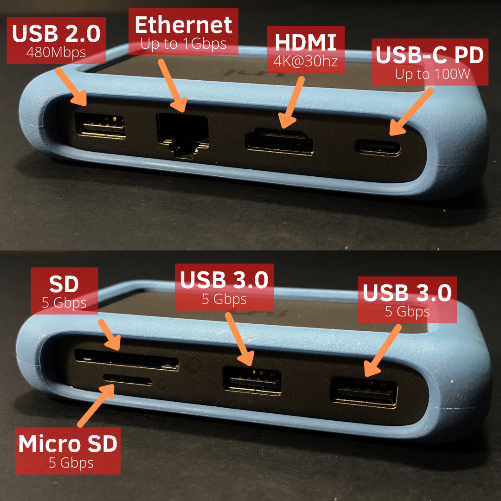
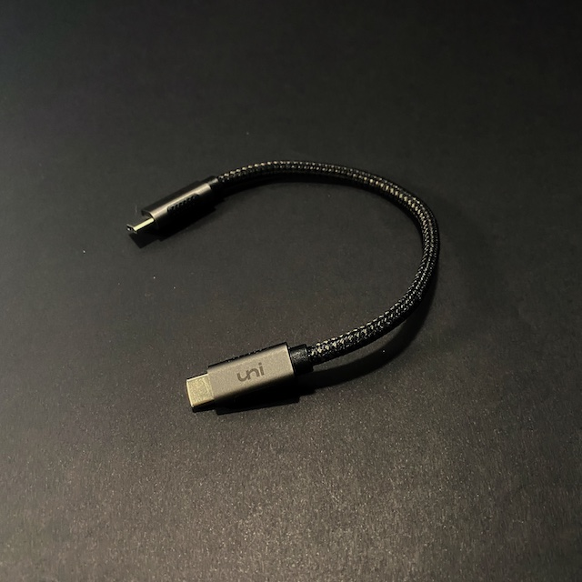

Uni 8-in-1 USB-C Hub Review
29/3/2021
Introduction
New USB-C devices are removing older ports such as USB-A and HDMI ports on laptops. However sometimes you may still require different ports to support your current and legacy peripherals! This 8-in-1 USB-C hub adds multiple ports through 1 USB-C port to any Type-c compatible phone or tablet, Mac, Windows laptop into a powerful workstation! Let’s check this one out from uni!
Why did we purchase this?
We purchased this product as going back to your accommodation from lectures/work and requiring to replug all your extra cables can be time-consuming and cause your workplace to be cluttered with cables on the table.
That’s why a “home setup” where your laptop only requires 1 cable and can connect to all your peripherals such as you external monitor, mouse and keyboard can be handy! If you’re a person that relies on using SD cards or external storage, a hub is a great choice for your setup! The attachment makes life a lot easier and creates a cable free table as the cables can be plugged into the hub behind the table.
What’s in the Box?
The aluminium hub was presented in a carbox box and includes a silicon rugged case and short 8.7 inch USB-C to USB-C cable to connect the hub and your device.
Supported devices
The hub is for designed for USB-C compatible devices, perfect if you have a new MacBook or a Dell XPS as they have limited ports.
As this is compatible with USB-C and Thunderbolt 3 devices, you can connect devices that support Thunderbolt 3.
- 1x Ethernet (speed up to 1Gbps) (backward compatible)
- 1x SD UHS-I (up to 104Mbps)
- 1x MicroSD UHS-I (up to 104Mbps)
- 1x USB 2.0 (up to 480Mbps)
- 1x HDMI (4K @ 30Hz) (backward compatible)
- 2x USB 3.0 (up to 5Gbps)
- 1x USB-C PD (up to 100W)
The ports on the hub include:
The 100W PD port can safely charge the latest MacBook Pro 16” at full speed (96W).
Design
The main hub is made up of aluminium, the included removable silicon “case” adds style and padding around the edges and corners, furthermore it adds grip and protection scratches to the corner and damage to accidental drop when taking it out.
The device is relatively small, around the size of a pack of cards, which makes it easy to store and take with you on the go.
The 8 ports on the hub are positioned well which means you can connect fatter connections into the hub and it will not block another port.
The option of having a removable cable means you can switch out the cable for a longer one to suit your needs. Therefore if they cable breaks, you can switch out the cable without the need of purchasing a new hub entirely. It also makes storing/taking this hub convenient as you can remove the cable without worrying the cable breaking during transport.
Issues
After long periods of time (using the Apple 61W charger), this USB-C hub can get hot to the touch whilst charging the device.
If the laptop/tablet/phone is not powered through the USB-C hub, it significantly drains the battery compared to without if all the ports are being used.
When we tested this by changing out the HDMI cable, we managed to see small sparks from the hub and male end of the HDMI cable.
We do wish the cable provided was a little longer as we have our MacBook raised with a riser and requires the hub to be close to the laptop.
Conclusion
If you require an inexpensive hub that can declutter your table and only require 1 cable to connect to your peripherals, we recommend it. If you plan to use this to expand your ports on your laptop or add SD card functionality we recommend it too. This hub is the same size as your palm of you hand which makes it super portable if you need to access external storage on the go or working in a café. This plug-and play hub helps avoiding the need of plugging cables over and over again when taking your laptop with you! Hubs like these that are NOT Thunderbolt 3 Hubs are around £40, so if you are planning to pick one up, make sure you’re not playing £100+ for a standard USB 3.0 Hub!